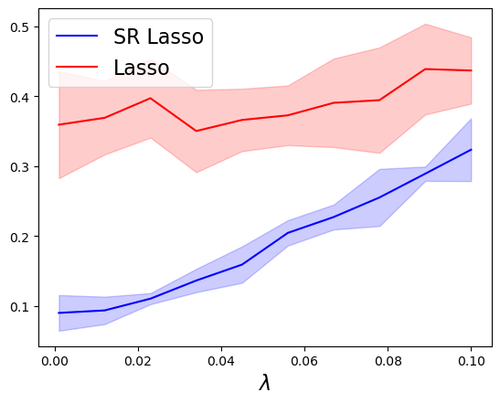
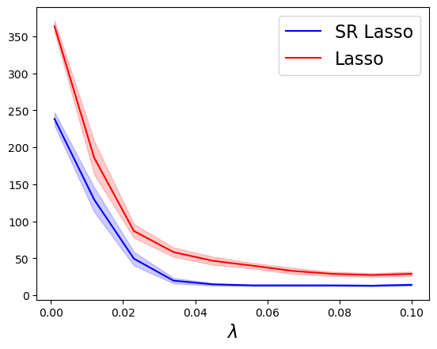

2D example
The operator is assume to be separable: \(\phi(x,y) = \phi_1(x)\phi_2(y)\). Recover \(\mu\) from
\[\int \phi(x,y) d\mu(x,y)\]
[21]:
# Import packages.
import numpy as np
import matplotlib.pyplot as plt
import time
import mmd as mmd
import operators as myops
import lasso as ls
import continuous_BP as cbp
from helper import prune,generate_plots
from mmd import mmd_laplace as error_fun
from importlib import reload # Python 3.4+
from numpy import linspace
reload(ls)
reload(myops)
reload(mmd)
[21]:
<module 'mmd' from '/Users/u2272691/Documents/GitHub/continuous-BP/Python/cBP_paper/mmd.py'>
Define discretized operators
[22]:
#Lasso on the grid
def Grid_Lasso(A,B,y_obs,la,tol=1e-8):
#forward and adjoint operators
def Op_lasso(A,B):
Bt = B.T
Bc = B.conjugate()
Act = A.conjugate().T
def FWD(x):
x0 = x[:,:,0]
return (A@x0)@Bt
def ADJ(x):
z = (Act@x)@Bc
return z[:,:,None]
return FWD, ADJ
FWD_lasso,ADJ_lasso = Op_lasso(A,B)
a = ls.Lasso_Tensor(FWD_lasso,ADJ_lasso, y_obs,la)
return a.reshape(-1)
[23]:
def generate_random_signal(s,xgrid1,xgrid2,shift,minsep=1,pos=True):
P = np.random.permutation(len(xgrid1)//minsep)
idx = P[:s]*minsep
t0 = xgrid1[idx] + shift[0]
P = np.random.permutation(len(xgrid2)//minsep)
idx = P[:s]*minsep
t1 = xgrid2[idx] + shift[1]
if pos:
a = np.random.rand(s,)+2
else:
a = (np.random.rand(s,)+2)*np.sign(np.random.randn(s,))+1j* (np.random.rand(s,)+2)*np.sign(np.random.randn(s,))
return a, np.stack((t0, np.random.permutation(t1)),axis=1)
[24]:
nx= [25,25] #grid sizes
xgrid1 = linspace(0,1,nx[0])
xgrid2 = linspace(0,1,nx[1])
points = np.array([np.array([x,y]) for x in xgrid1 for y in xgrid2])
#define Fourier
fq = 8
Phi, dPhi = myops.getFourierOp(fq)
A, dA = Phi(xgrid1), dPhi(xgrid1)
#define Fourier
fq = 8
Psi, dPsi = myops.getFourierOp(fq)
B, dB = Psi(xgrid1), dPsi(xgrid2)
'''
#Define Gaussian
M = 20
tvec = np.linspace(0,1,M)
sigma=0.1
Phi, A, dA = myops.getGaussianMatrices(tvec,sigma,xgrid1)
#define Laplace
T = 3
tvec = np.linspace(0,1,T)
Psi, B, dB = myops.getLaplaceMatrices(tvec,xgrid2)
'''
pos = False
Runs = 5
L= 10
alpha_max = .1
alpha_vals = np.logspace(-6,np.log10(alpha_max),L)
alpha_vals = np.linspace(0.001,alpha_max,L)
tol=1e-2
s=3
h1 = (xgrid1[1]-xgrid1[0])
h2 = (xgrid2[1]-xgrid2[0])
spacing = 0.2
err_lasso = np.zeros((L,Runs))
err_srlasso = np.zeros((L,Runs))
supp_lasso = np.zeros((L,Runs))
supp_srlasso = np.zeros((L,Runs))
for i in range(L):
alpha = alpha_vals[i]
for r in range(Runs):
a0, t0 = generate_random_signal(s,xgrid1,xgrid2,[spacing*h1,spacing*h2],minsep=3,pos=True)
y_true = np.einsum('kj,lj->kl', Phi(t0[:,0]), Psi(t0[:,1])*a0[None,:])
noise_lev = 0.01*np.linalg.norm(y_true)/np.sqrt(len(y_true))
y_obs = y_true +noise_lev*np.random.randn( *y_true.shape)
# run SR Lasso
tol=1e-4
tau1,tau2=1,1
a,b1,b2 = cbp.SRLasso_2DTensor(A, dA, B, dB, y_obs,alpha,[tau1,tau2])
a,grid = prune(a, points+ np.stack((b1,b2),axis=1), tol)
grid = np.mod(grid,1)
err_srlasso[i,r] = error_fun(t0,a0,grid,a)
supp_srlasso[i,r] = len(a)
#run Lasso
a_lasso = Grid_Lasso(A,B, y_obs,alpha)
a_lasso ,x_lasso = prune(a_lasso,points,tol)
x_lasso = np.mod(x_lasso,1)
err_lasso[i,r] = error_fun(t0,a0,x_lasso,a_lasso)
supp_lasso[i,r ] = len(a_lasso)
Plots = [err_srlasso,err_lasso]
labels = ['SR Lasso','Lasso']
filename = '2DFourier_'+'N'+str(nx[0])+'s'+str(s)+'_pos='+str(pos)+'Err'+'.png'
generate_plots(Plots, labels,filename,xlabel='$\lambda$', xaxis = alpha_vals)
Plots = [supp_srlasso,supp_lasso]
labels = ['SR Lasso','Lasso']
filename = '2DFourier_'+'N'+str(nx[0])+'s'+str(s)+'_pos='+str(pos)+'Supp'+'.png'
generate_plots(Plots, labels,filename,xlabel='$\lambda$', xaxis = alpha_vals)


[ ]:
[ ]: